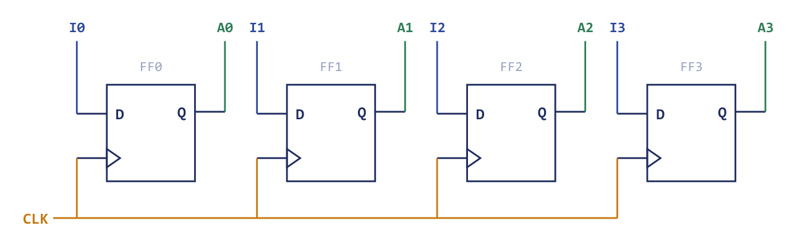
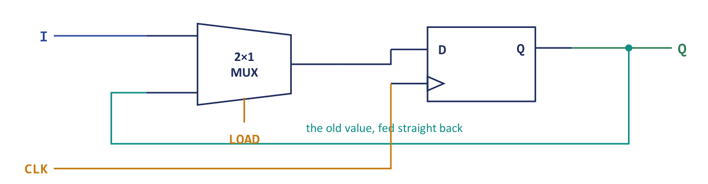
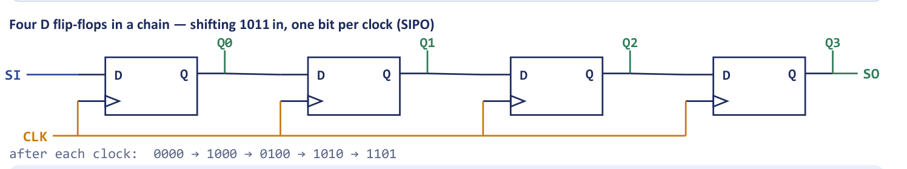
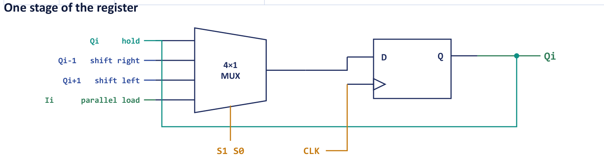
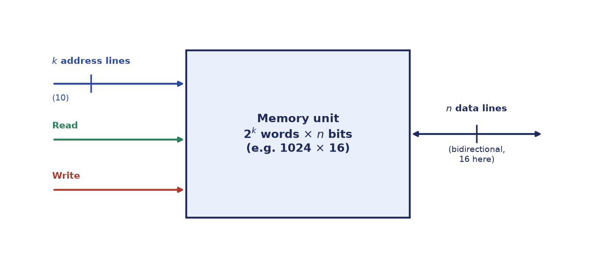
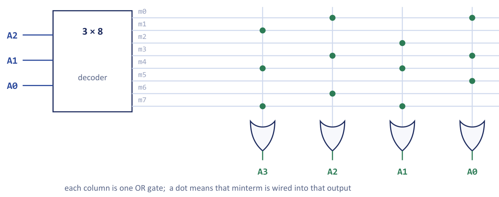
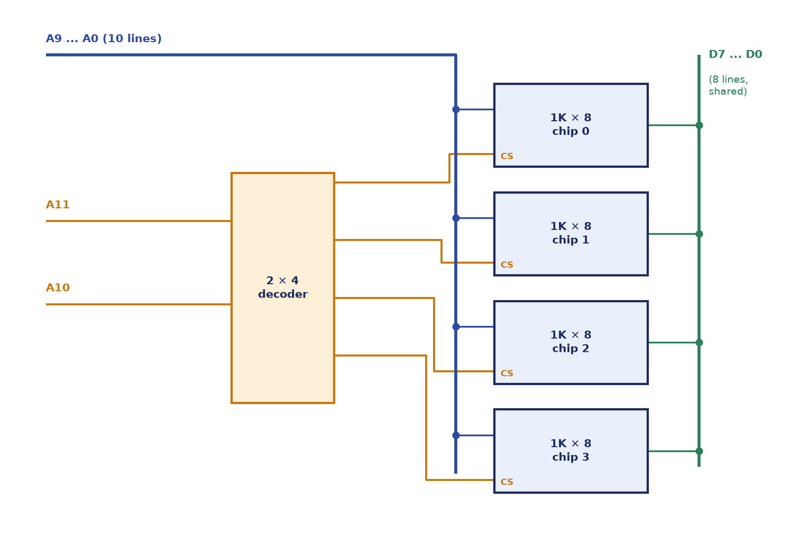

Chapter 6: Registers, Shift Registers and Memory¶
Components that remember: from a bank of flip-flops to a wall of addressable words
Everything in the previous two chapters was combinational: a change at the inputs travelled through the gates and appeared at the outputs, and nothing was remembered. A computer cannot work like that. It must hold an operand while the adder works on it, keep the address of the next instruction while the current one executes, and store millions of words of program and data. The components that remember are the subject of this chapter. They are built from the flip-flops of Chapter 3, and they are sequential: their outputs depend on what they hold as well as on their present inputs.
The chapter climbs a short ladder. A register is a group of flip-flops that stores an \(n\)-bit word. Adding a control line and a multiplexer gives a register that can either load new data or hold what it has. Connecting the flip-flops in a chain gives a shift register, in which data marches one position per clock, and adding a few more multiplexers gives the universal shift register that holds, shifts both ways or loads in parallel. Finally, a memory is a very large number of words behind a decoder that selects one of them: addressing is decoding. A RAM adds storage cells and a write control to that decoder; a ROM is the decoder followed by an array of OR gates, so it stores a truth table.
By the end of the chapter you will have met every block that the datapath and the memory of a computer are drawn with. From here on diagrams are drawn in terms of these boxes, and you will hardly see a gate again.
What you will learn
- Describe a register as \(n\) flip-flops on one clock, and design a register with parallel load, explaining why the load control gates the data and never the clock.
- Name the four shift-register types, trace data through them, and explain how a universal shift register selects hold, shift right, shift left or parallel load.
- Explain memory organisation: \(m = 2^k\) words of \(n\) bits, address lines, data lines, read and write cycles, and capacity.
- Compare static and dynamic RAM, and explain the structure of a ROM as a decoder and OR array that stores a truth table.
- Size a ROM for a given combinational function, and expand memory chips in width and in depth.
6.1 From one flip-flop to a register¶
A register is a group of flip-flops sharing a common clock, holding an \(n\)-bit word: an \(n\)-bit register needs \(n\) flip-flops. A clock pulse reaches every flip-flop at the same moment, so all \(n\) bits are loaded together. Figure 6.1 shows a 4-bit register made of four D flip-flops. The inputs \(I_0\) to \(I_3\) go to the \(D\) inputs, and after the clock edge the outputs \(A_0\) to \(A_3\) hold the word.

If a combinational circuit is a calculation, a register is a whiteboard that holds the answer until you decide to wipe it. The clock is the "now update" tick; between ticks the value just sits there, available to be read as often as needed. Many registers also have a clear input that resets every flip-flop to 0 independently of the clock, and which is therefore called an asynchronous clear.
The interesting design question is how to make a register hold its value when you do not want to load it. With the clock connected directly to the flip-flops, the register loads its inputs on every clock pulse: there is no way to say "keep what you have". An obvious fix is to gate the clock itself, ANDing it with a load signal so that the flip-flops see a clock pulse only when loading is wanted. That is the wrong solution. The extra gate delays the clock to that register, so different registers then receive their clock edges at slightly different times. This clock skew is one of the classic sources of failure in synchronous design. A registered value can be captured by one register and then change before another register, still waiting for its late clock, has read it.
6.2 The register with parallel load¶
The correct solution leaves the clock alone and controls the data instead. Put a 2:1 multiplexer in front of each D input, with the external input \(I_i\) on one data input and the flip-flop's own output \(Q_i\) fed back to the other. A control line Load drives the select inputs of all the multiplexers (Figure 6.2).

The input equation of each flip-flop is
- Load = 1. The multiplexer passes the external input \(I_i\) to the flip-flop, so the new value is loaded at the next clock edge.
- Load = 0. The multiplexer passes the flip-flop's own output \(Q_i\) back to its input, so the clock pulse rewrites the same value and the register appears to hold.
The clock is never gated. Every flip-flop still receives a pulse on every cycle; what changes is whether the data it is offered is new or old.
Holding is not the same as doing nothing
A common misconception is that when Load = 0 the register does nothing, so no clock is needed and the flip-flops are idle. In fact the clock keeps ticking and the flip-flops keep reloading, but they reload their own current output through the feedback path. "Hold" is an active refresh of the same value, not an absence of activity. This is why the feedback path exists at all: without it, a flip-flop with no new data would capture garbage on the next edge.
This arrangement is the pattern of every register in the processors that follow. The LD control input of a register in the basic computer of Chapters 9 to 11 is exactly this Load line, and the feedback multiplexer is why one register can be loaded from another in a single clock pulse while every other register quietly rewrites itself. Many registers add two more controls: an increment (INR) input, a counter built into the register, and the asynchronous clear (CLR) mentioned above.
Example 6.1: Load and hold on a 4-bit register
Problem. A 4-bit register with parallel load contains \(0101\). The external data input is \(I = 1100\). What is the register after (a) a clock pulse with Load = 0, and (b) a clock pulse with Load = 1?
Solution. (a) With Load = 0, \(D_i = 0\cdot I_i + 1\cdot Q_i = Q_i\) for every bit, so each flip-flop reloads its own output and the register still contains \(0101\). (b) With Load = 1, \(D_i = 1\cdot I_i + 0\cdot Q_i = I_i\), so the register takes \(I = 1100\) at the clock edge.
Answer. (a) \(0101\) (held). (b) \(1100\) (loaded).
6.3 Shift registers¶
A shift register is a register whose contents move one position, left or right, on every clock pulse. It is made by connecting the output of each flip-flop to the input of the next, so that the whole word advances one place per pulse. Think of a bucket brigade: on every tick each person passes the bucket to a neighbour and receives a new one from the other side. Nothing is computed; data simply marches. That marching is how serial links, delay lines and even multiplication by shifting all work.
The way data enters and leaves gives four types, named by the pair of letters Serial/Parallel In and Serial/Parallel Out.
| Type | Meaning | Typical use |
|---|---|---|
| SISO | Serial in, serial out | One bit in per clock at one end and one bit out at the other; \(n\) clocks to move a bit through: a delay line, bit-serial transfer |
| SIPO | Serial in, parallel out | Bits shifted in one at a time, then all \(n\) read at once: serial-to-parallel converter (receiver) |
| PISO | Parallel in, serial out | All \(n\) loaded at once, then shifted out one per clock: parallel-to-serial converter (transmitter) |
| PIPO | Parallel in, parallel out | Load and read all \(n\) at once: just a register with parallel load, a storage register or buffer |
Table 6.1. The four shift-register configurations.
SIPO and PISO are the twin gears of serial communication. A USB cable, an SPI sensor or an old serial mouse sends bits one at a time down a single wire, which is cheap and uses few pins. The transmitter uses a PISO register to squeeze a parallel byte out one bit per clock; the receiver uses a SIPO register to catch those bits and reassemble the byte in parallel. The whole "serialise here, de-serialise there" pattern underlying nearly every port on a computer is just two shift registers facing each other. It also explains why serial links are slower, needing \(n\) clock pulses for an \(n\)-bit word, but need only one wire.
Figure 6.3 shows four D flip-flops in a chain, with the serial input SI at the left end and the serial output SO at the right. A common clock drives all of them.

Registers are numbered in two different ways in practice, and you must keep track of which is in use. In Figure 6.3 the stages are numbered from the serial-input end, so \(Q_0\) is the stage next to SI. In the traces below we write the contents of a register as a binary word \(Q_3Q_2Q_1Q_0\), with \(Q_3\) on the left. A right shift moves every bit one place towards \(Q_0\), and the serial input enters at \(Q_3\). In that notation the leftmost stage in the drawing is \(Q_3\), and the figure's FF0 plays the role of \(Q_3\) and its FF3 the role of \(Q_0\). The first bit in travels furthest, to the stage next to the serial output.
Example 6.2: Tracing a 4-bit SIPO shift register
Problem. A 4-bit shift-right register \(Q_3Q_2Q_1Q_0\) starts at \(0000\). The serial input receives the stream \(1, 0, 1, 1\) (one bit per clock, entering at \(Q_3\)). Show the register after each clock.
Solution. On each clock every bit moves one place to the right and the serial input enters \(Q_3\).
| Clock | Serial in | \(Q_3\) | \(Q_2\) | \(Q_1\) | \(Q_0\) |
|---|---|---|---|---|---|
| initial | – | 0 | 0 | 0 | 0 |
| 1 | 1 | 1 | 0 | 0 | 0 |
| 2 | 0 | 0 | 1 | 0 | 0 |
| 3 | 1 | 1 | 0 | 1 | 0 |
| 4 | 1 | 1 | 1 | 0 | 1 |
After four clocks the serial stream has been captured in parallel form. Note that the first bit in ends up furthest along, in \(Q_0\).
Answer. The final state is \(Q_3Q_2Q_1Q_0 = 1101\), which is the stream \(1,0,1,1\) reversed in time order: the four serial bits have been converted to parallel.
Example 6.3: Shifting a word out
Problem. A 4-bit shift-right register holds \(1101\) and its serial input is 0 for four clock pulses. Give the contents after each pulse and the bit shifted out at the right-hand end.
Solution. On each pulse the bit in \(Q_0\) leaves the register, the other bits move right and a 0 enters at \(Q_3\).
| Pulse | Serial in | Register | Bit shifted out |
|---|---|---|---|
| start | – | 1 1 0 1 | – |
| 1 | 0 | 0 1 1 0 | 1 |
| 2 | 0 | 0 0 1 1 | 0 |
| 3 | 0 | 0 0 0 1 | 1 |
| 4 | 0 | 0 0 0 0 | 1 |
After four pulses the register is empty and \(1011\) has come out serially, least-significant bit first.
Answer. The sequence of contents is \(0110, 0011, 0001, 0000\), and the bits out are \(1, 0, 1, 1\).
A PISO register is a register with parallel load whose shift control moves the loaded word out one bit per clock, and the two ends of a serial link can be traced together. A 4-bit PISO loaded with \(1011\) shifts out \(1, 1, 0, 1\) (least-significant bit first), the register passing through \(0101\), \(0010\), \(0001\), \(0000\). If a SIPO receiver at the other end of the wire takes in those four bits at \(Q_3\) it passes through \(1000\), \(1100\), \(0110\), \(1011\), and ends with the original byte, the bit that left first now sitting in \(Q_0\). Transmit and receive have recovered the parallel word.
Shifting and arithmetic¶
A left shift multiplies a number by 2, and a right shift divides it by 2, for unsigned data. For example \(0011\) (3) shifted left once is \(0110\) (6), and \(0110\) shifted right once is \(0011\). In a right shift the value is halved and the bit that falls off the right-hand end is lost, or captured in a separate bit as in the circular and rotate instructions of the basic computer. Shift-and-add multiplication, treated in the chapters on arithmetic, is built entirely out of such shifts.
Example 6.4: Shifting left with a serial input
Problem. A 4-bit shift-left register holds \(0011\) with the serial input held at 1 for two pulses. What are the contents after each pulse?
Solution. In a left shift every bit moves one place towards \(Q_3\) and the serial input enters at \(Q_0\). After the first pulse: \(0111\). After the second: \(1111\).
Answer. \(0111\), then \(1111\).
6.4 Bidirectional and universal shift registers¶
A bidirectional shift register can shift both left and right, under control of a direction line. A universal shift register adds parallel load too. It does everything the four types above do, which is why the universal shift register is the one real designs use.
It is built by putting a 4:1 multiplexer in front of every flip-flop and driving all the multiplexers from the same two mode-select lines \(s_1s_0\). Those two bits choose what the whole register does on the next clock.
| \(s_1\) | \(s_0\) | Operation | What each flip-flop's multiplexer selects |
|---|---|---|---|
| 0 | 0 | Hold (no change) | its own output \(Q_i\), so the value is rewritten unchanged |
| 0 | 1 | Shift right | the output of the neighbouring flip-flop on the side the data comes from |
| 1 | 0 | Shift left | the output of the neighbouring flip-flop on the other side |
| 1 | 1 | Parallel load | the external data input \(I_i\) |
Table 6.2. Mode control of a universal shift register.
Figure 6.4 shows one stage. The four multiplexer inputs are the stage's own output (hold), the output of the previous stage \(Q_{i-1}\) (shift right), the output of the next stage \(Q_{i+1}\) (shift left) and the external input \(I_i\) (load). In this figure, as in Figure 6.3, the stages are numbered in the direction of a right shift, so a right shift takes the output of the stage numbered one less, its left neighbour in the drawing.

When shifting right, the leftmost flip-flop has no left neighbour, so it takes a serial input line instead; when shifting left, the rightmost flip-flop takes its serial input from the other end. In a circular shift these serial inputs are wired back to the opposite end of the register, so no bit is lost.
The four types of the previous section are all special cases. Tie \(s_1s_0\) to \(01\) and you have a SIPO or SISO; load with \(11\) and then shift with \(01\) and you have a PISO; use \(11\) always and you have a PIPO, that is, a register with parallel load. One part number covers all of them, and the mode can be changed at run time by the control unit, which is exactly what a processor needs: the circular-shift and shift instructions of the basic computer are, in hardware, a universal shift register whose mode bits are driven by the control logic, shifting right or left when the corresponding instruction is executed and holding at all other times.
Example 6.5: A universal shift register in four modes
Problem. A 4-bit universal shift register \(Q_3Q_2Q_1Q_0\) starts at \(1011\). The serial right input is 1, the serial left input is 0 and the parallel data is \(0110\). Shift right moves each bit towards \(Q_0\) with the right input entering at \(Q_3\); shift left moves each bit towards \(Q_3\) with the left input entering at \(Q_0\). Give the contents after each clock for the mode sequence \(11, 01, 10, 00\) (one mode per clock).
Solution. Clock 1, mode \(11\) (load): the register takes the parallel data, \(0110\). Clock 2, mode \(01\) (shift right): every bit moves one place to the right and the serial right input 1 enters at \(Q_3\): \(0110 \to 1011\). Clock 3, mode \(10\) (shift left): every bit moves left and the serial left input 0 enters at \(Q_0\): \(1011 \to 0110\). Clock 4, mode \(00\) (hold): no change, \(0110\).
Answer. After the four clocks: \(0110\), \(1011\), \(0110\), \(0110\). The final state is \(Q_3Q_2Q_1Q_0 = 0110\).
6.5 Memory organisation¶
A memory unit stores information in words. A memory of \(m\) words of \(n\) bits each has \(m\) storage locations, each holding an \(n\)-bit word. To select one of \(m\) words the memory needs \(k\) address lines, where
It also has \(n\) data lines, which carry the word being read or written, and control lines: a read line and a write line (or a single read/write line), and often a chip-enable or chip-select. Figure 6.5 shows the standard box for a \(1024 \times 16\) memory, which has 10 address lines and 16 data lines. In a computer the address is held in a memory address register (MAR) and the data in a memory data register, so the register of Section 6.2 is the interface to every memory.

A memory is a wall of numbered post-office boxes. The address is the box number, the word is whatever letter is inside, and the address lines are how many digits the box numbers have: \(k\) digits reach \(2^k\) boxes. Read means "open box \(A\) and copy what is there"; write means "open box \(A\) and replace its contents". Notice that a decoder is hiding inside: the address bits are decoded one-hot to select exactly one box. Memory and the decoder of Chapter 5 are the same idea at different scales: addressing is decoding.
The two memory cycles are simple. Write: apply the address, place the data on the data lines and assert Write; the addressed word is overwritten. Read: apply the address and assert Read; the addressed word appears on the data lines.
K means 1024, not 1000
In memory sizes \(1\text{K} = 2^{10} = 1024\), \(1\text{M} = 2^{20}\) and \(1\text{G} = 2^{30}\). A \(4\text{K} \times 8\) chip therefore holds 4096 words and needs 12 address lines. Always rewrite a size as a power of two before counting address lines. This is the most common arithmetic slip in memory questions.
| Address lines \(k\) | Words \(2^k\) | Usual name |
|---|---|---|
| 8 | 256 | 256 |
| 10 | 1 024 | 1K |
| 12 | 4 096 | 4K |
| 16 | 65 536 | 64K |
| 20 | 1 048 576 | 1M |
Table 6.3. Address lines against the number of words.
Example 6.6: Address lines, data lines and capacity
Problem. How many address and data lines does a \(4\text{K} \times 16\) memory need, and what is its capacity in bits? How many address lines does a \(1\text{M} \times 8\) memory need?
Solution. \(4\text{K} = 4 \times 1024 = 4096 = 2^{12}\) words, so 12 address lines. Each word has 16 bits, so 16 data lines. Capacity \(= 4096 \times 16 = 65\,536\) bits (64 Kbit). For \(1\text{M} = 2^{20}\) words, 20 address lines and 8 data lines, a capacity of \(2^{20} \times 8 = 8\) Mbit, which is \(1\) MB.
Answer. \(4\text{K}\times 16\): 12 address lines, 16 data lines, 65 536 bits. \(1\text{M} \times 8\): 20 address lines.
Example 6.7: Sizing a memory from its pin count
Problem. A memory chip has 11 address pins and 8 data pins. What is its capacity, and how many such chips make a \(64\text{K} \times 8\) memory?
Solution. 11 address pins give \(2^{11} = 2048 = 2\text{K}\) words, and 8 data pins give 8-bit words, so the capacity is \(2\text{K} \times 8 = 16\,384\) bits. A \(64\text{K}\)-word memory needs \(64\text{K}/2\text{K} = 32\) chips. The low address lines \(A_0 \ldots A_{10}\) are shared by all chips, and the five high lines \(A_{11} \ldots A_{15}\) feed a \(5 \times 32\) decoder that selects one chip.
Answer. \(2\text{K}\times 8\) (16 Kbit); 32 chips, selected by a 5-to-32 decoder on \(A_{11}\) to \(A_{15}\).
The two numbers in the label "\(2\text{K} \times 8\)" tell you everything about a chip: the first gives the address pins (its base-2 logarithm) and the second gives the data pins. Every memory question starts by decoding that label.
6.6 Random-access memory¶
RAM (random-access memory) is read/write memory in which any word takes the same time to reach whatever its location. It is volatile: its contents vanish when the power is removed. The name "random access" is often misread as "slow, unpredictable, or picking locations at random". It means the opposite: every location is equally fast to reach, so jumping straight to word 9000 costs the same as word 3, with no waiting. The name contrasts with sequential-access media such as magnetic tape, where reaching a distant spot means winding past everything before it. "Random" here means "any order, uniform cost", a strength and not a defect.
RAM comes in two technologies, which differ in the cell that stores a bit.
| Static RAM (SRAM) | Dynamic RAM (DRAM) | |
|---|---|---|
| Storage cell | latch of 4-6 transistors | one transistor and one capacitor |
| Refresh | not needed | must be refreshed periodically (charge leaks) |
| Speed | faster | slower |
| Density and cost | lower density, costlier per bit | higher density, cheaper per bit |
| Power | higher static power | lower |
| Typical use | cache memory | main memory |
Table 6.4. SRAM compared with DRAM.
Why would anyone build main memory from a cell that forgets on its own within milliseconds? Because the one-transistor, one-capacitor cell is minuscule and cheap, letting gigabytes be packed on a chip. The price is a refresh controller that quietly reads and rewrites every row thousands of times a second to top up the charge. It is a classic engineering bargain: accept a housekeeping cost to win enormous density. SRAM refuses the bargain. Its latch holds its value indefinitely without refresh, being a cross-coupled feedback circuit like the flip-flop of Chapter 3, but each cell needs about six transistors, so it stays small and precious: it is the memory used for caches.
6.7 Read-only memory¶
A ROM stores permanent data. In its pure form it can be read but not written during normal operation, and it is non-volatile: it keeps its contents with the power off. This is why the first program a machine runs when you press the power button, the boot code of the firmware, lives in a ROM.
Internally, a \(2^k \times n\) ROM is a \(k\)-to-\(2^k\) decoder feeding a programmable array of \(n\) OR gates (Figure 6.6). The decoder generates all \(2^k\) minterms of the \(k\) address lines, so exactly one minterm line is active for each address. Each OR gate (one per output bit) has connections, marked by dots, to the minterm lines that must be ORed into that output.

This is exactly the construction of Section 5.3, a decoder and OR gates implementing a function, with the OR connections made permanent and packaged. The two ideas, "implement a function with a decoder and OR gates" and "a ROM stores a truth table", are the same circuit: one built ad hoc, one made as a product. Storing data and computing a function turn out to be the same act. The ROM therefore stores a truth table, and since its outputs depend only on the address lines it is a combinational device: \(n\) outputs, each a Boolean function of the \(k\) address inputs. The read of a ROM word is simply the output column of the truth table at that row.
A ROM needs no simplification and no Karnaugh map: you just write the answer down. That is why ROMs were used for code converters, character generators and, in the control units of later chapters, the control memory of a microprogrammed processor.
Example 6.8: A ROM that squares a number
Problem. Design a ROM that outputs the square of a 3-bit number \(B_2B_1B_0\). What ROM size is needed?
Solution. The input ranges over \(0\) to \(7\), so the squares range over \(0\) to \(49\), which needs 6 output bits (\(2^6 = 64 > 49\)). The address is 3 bits, so there are \(2^3 = 8\) words, each of 6 bits. The ROM is \(8 \times 6\). Store the truth table:
| \(N\) | Address \(B_2B_1B_0\) | \(N^2\) | Stored word (6 bits) |
|---|---|---|---|
| 0 | 000 | 0 | 000000 |
| 1 | 001 | 1 | 000001 |
| 2 | 010 | 4 | 000100 |
| 3 | 011 | 9 | 001001 |
| 4 | 100 | 16 | 010000 |
| 5 | 101 | 25 | 011001 |
| 6 | 110 | 36 | 100100 |
| 7 | 111 | 49 | 110001 |
Answer. An \(8 \times 6\) ROM programmed with the table above outputs \(N^2\) for any 3-bit input \(N\).
Example 6.9: Sizing ROMs
Problem. (a) Design an \(8 \times 4\) ROM that outputs \(2N+1\) for a 3-bit input \(N\) and list the stored words. (b) What ROM size stores the cube \(N^3\) of a 3-bit number? (c) What size is needed to implement four functions of five variables?
Solution. (a) For \(N = 0, \ldots, 7\) the values \(2N+1\) are \(1,3,5,7,9,11,13,15\), which fit in 4 bits: \(0001, 0011, 0101, 0111, 1001, 1011, 1101, 1111\). The ROM has 3 address lines and 4 data lines. (b) The cubes are \(0,1,8,27,64,125,216,343\), and \(343\) needs 9 bits (\(2^8 = 256 < 343 < 512 = 2^9\)). The ROM is \(8 \times 9\). (c) Five variables give \(2^5 = 32\) addresses, and four functions need four output bits: a \(32 \times 4\) ROM, with the inputs forming the address and the outputs being the stored word.
Answer. (a) \(8\times 4\), words as listed. (b) \(8 \times 9\). (c) \(32 \times 4\).
Example 6.10: A ROM for a seven-segment display
Problem. A single ROM is to convert a 4-bit BCD digit (0 to 9) into the seven control bits of a seven-segment display (segments \(a\) to \(g\)). State the ROM size and outline the stored table.
Solution. The address is the 4-bit BCD digit, so there are \(2^4 = 16\) words. The word is the seven segment-control bits \(abcdefg\). The ROM is \(16 \times 7\). Words 0 to 9 hold the segment patterns of the digits; for the six unused inputs 10 to 15, which are don't-cares, the ROM may store 0 in every bit (\(0000000\), all segments off). With the segments of the usual display (1 lights a segment) one common pattern for the ten digits is \(0\!:\!1111110\), \(1\!:\!0110000\), \(2\!:\!1101101\), \(3\!:\!1111001\), \(4\!:\!0110011\), \(5\!:\!1011011\), \(6\!:\!1011111\), \(7\!:\!1110000\), \(8\!:\!1111111\), \(9\!:\!1111011\).
Answer. \(16 \times 7\) ROM: four address bits, seven data bits, ten programmed words and six unused words.
The words "read-only" are only true in normal operation. The ROM family differs in how a chip is written and whether it can be erased.
| Type | Programmed by | Erasable? | Notes |
|---|---|---|---|
| Mask ROM | the manufacturer, at fabrication | no | cheapest in volume; contents fixed for ever |
| PROM | the user, once, by blowing fuses | no (one-time) | programmable read-only memory |
| EPROM | the user, electrically | yes: by ultraviolet light, the whole chip | quartz window on the package |
| EEPROM | the user, electrically | yes: electrically, byte by byte, in circuit | electrically erasable PROM |
| Flash | the user, electrically | yes: electrically, in blocks | fast, high-density EEPROM variant; SSDs and USB drives |
Table 6.5. The ROM family.
Every type after the mask ROM can be rewritten, though not at ordinary speed and usually not by the running program. The defining property is non-volatility. Flash replaced the older types because it erases whole blocks at once, which makes the cells much smaller and the chip far denser and cheaper.
6.8 Expanding memory¶
Small chips combine into larger memories, in two directions that do different jobs.
- Word expansion (more locations). Place chips side by side and use a decoder on the high-order address lines to select one chip. The low-order lines address a word inside a chip and go to every chip. The data lines are shared.
- Width expansion (wider words). Place chips in parallel, all sharing the same address lines, each supplying part of the data word. Two \(1\text{K}\times 4\) chips make a \(1\text{K} \times 8\) memory.
The low-order lines pick a word inside a chip, while the high-order lines pick which chip: narrow down by building first, then by door number.
Example 6.11: A 4K × 8 memory from 1K × 8 chips
Problem. Build a \(4\text{K} \times 8\) memory from \(1\text{K}\times 8\) chips. How many chips are needed, and how are the address lines used?
Solution. \(4\text{K}/1\text{K} = 4\) chips, and the word size is already 8 bits, so only word expansion is needed. \(1\text{K} = 2^{10}\), so \(A_9 \ldots A_0\) go to every chip. Selecting one chip of four needs \(\log_2 4 = 2\) address lines, \(A_{11}A_{10}\), driving a \(2 \times 4\) decoder whose four outputs are the chip-select lines (Figure 6.7). Total address lines: \(10 + 2 = 12 = \log_2 4096\), as it must be.
Answer. Four chips; \(A_9\) to \(A_0\) shared, \(A_{11}A_{10}\) decoded to the chip selects.

This is the same circuit idea as decoder expansion in Chapter 5 (low-order lines go to every module, a high-order line chooses which module through its enable), and it is the starting point of the memory address map developed in Chapter 18.
Example 6.12: Chips and decoder for a 2K × 8 memory
Problem. How many \(256 \times 8\) RAM chips are needed to build a \(2\text{K}\times 8\) memory, and what decoder selects the chips?
Solution. The number of chips is \(2048/256 = 8\) (word expansion only, since the word size is 8 bits already). Each chip has \(256 = 2^8\) words, so 8 low address lines go to every chip. To select one of 8 chips needs \(\log_2 8 = 3\) high address lines, driving a \(3 \times 8\) decoder. The total number of address lines is \(8 + 3 = 11 = \log_2 2048\), which is consistent.
Answer. 8 chips, selected by a \(3 \times 8\) decoder driven by the 3 most-significant address lines.
6.9 Summary¶
Key points
- A register is \(n\) flip-flops on one clock. A register with parallel load puts a 2:1 multiplexer in front of every D input, \(D_i = \text{Load}\cdot I_i + \text{Load}'\cdot Q_i\): Load \(= 1\) loads and Load \(= 0\) holds by feeding \(Q_i\) back. The load control gates the data, never the clock.
- Shift registers move their bits one place per clock: SISO, SIPO, PISO, PIPO. A universal shift register puts a 4:1 multiplexer on each stage and two mode bits \(s_1s_0\): \(00\) hold, \(01\) shift right, \(10\) shift left, \(11\) parallel load.
- A memory of \(m\) words by \(n\) bits has \(k = \log_2 m\) address lines and \(n\) data lines, with a capacity of \(2^k \times n\) bits. Remember \(1\text{K} = 1024\). Addressing is decoding.
- RAM is volatile and read/write: SRAM (latch cells, fast, no refresh, cache) and DRAM (one transistor and one capacitor, dense, needs refresh, main memory).
- ROM is non-volatile: a decoder plus a programmable OR array, that is, a stored truth table, a combinational device. Types: mask ROM, PROM, EPROM, EEPROM, flash.
- Memory expands in width (chips in parallel, shared address lines) and in depth (chips side by side, with a decoder on the high-order address lines selecting one chip).
| Component | Key rule |
|---|---|
| \(n\)-bit register | \(n\) flip-flops, one clock |
| Parallel-load register | \(D_i = \text{Load}\cdot I_i + \text{Load}'\cdot Q_i\) |
| Universal shift register | \(s_1s_0\): 00 hold, 01 right, 10 left, 11 load |
| \(m \times n\) memory | \(k = \log_2 m\) address lines, \(n\) data lines, \(m\cdot n\) bits |
| \(2^k \times n\) ROM | \(k\)-to-\(2^k\) decoder and \(n\) OR gates |
| Chips for \(M \times N\) from \(m \times n\) | \((M/m)\times(N/n)\) |
6.10 Exercises¶
Exercise 6.1. Draw a 4-bit register with parallel load using D flip-flops and 2:1 multiplexers. Write the input equation \(D_i\) in terms of Load, \(I_i\) and \(Q_i\) and explain the hold operation.
Answer
Each D flip-flop has a 2:1 multiplexer in front of its D input; the multiplexer's data inputs are \(I_i\) (selected when Load = 1) and the flip-flop's own output \(Q_i\) (selected when Load = 0), and all four multiplexers share the Load line; the clock goes to all flip-flops directly (Figure 6.2 shows one bit). \(D_i = \text{Load}\cdot I_i + \text{Load}'\cdot Q_i\). When Load = 0 the flip-flop reloads its own output at every clock pulse, so the value is held; the clock is never gated.
Exercise 6.2. Why must a register with parallel load use a feedback multiplexer rather than a gated clock?
Answer
Gating the clock (ANDing it with a load signal) delays the clock to that register, so different registers latch at slightly different instants. This clock skew is a classic source of failure in synchronous design. The multiplexer leaves the clock intact and instead feeds \(Q\) back to \(D\) when Load = 0.
Exercise 6.3. (Fill in the blank) A register with parallel load holds its value when the Load control equals ______.
Answer
- With Load = 0 each flip-flop reloads its own output, so the value is held.
Exercise 6.4. Name and describe the four shift-register configurations (SISO, SIPO, PISO, PIPO) with one application each. What does a universal shift register add, and what does its 2-bit mode control select?
Answer
SISO: serial in, serial out, a delay line. SIPO: serial in, parallel out, a serial-to-parallel converter (a receiver). PISO: parallel in, serial out, a parallel-to-serial converter (a transmitter). PIPO: parallel in, parallel out, a storage register or buffer. A universal shift register adds parallel load and both directions of shifting; its mode bits \(s_1s_0\) select \(00\) hold, \(01\) shift right, \(10\) shift left and \(11\) parallel load.
Exercise 6.5. A 4-bit shift-right register \(Q_3Q_2Q_1Q_0\) starts at \(0000\) and receives the serial stream \(1, 1, 0, 1\) (entering at \(Q_3\), one bit per clock). Trace the register contents after each of the four clock pulses.
Answer
| Clock | Serial in | \(Q_3Q_2Q_1Q_0\) |
|---|---|---|
| 1 | 1 | 1000 |
| 2 | 1 | 1100 |
| 3 | 0 | 0110 |
| 4 | 1 | 1011 |
The final contents are \(1011\).
Exercise 6.6. A 4-bit universal shift register starts at \(Q_3Q_2Q_1Q_0 = 1011\). The right serial input is 1, the left serial input is 0 and the parallel data is \(0110\). Give the register after each clock for the mode sequence \(11, 01, 10, 00\).
Answer
Clock 1 (load): \(0110\). Clock 2 (shift right, 1 enters \(Q_3\)): \(1011\). Clock 3 (shift left, 0 enters \(Q_0\)): \(0110\). Clock 4 (hold): \(0110\). Final contents \(0110\).
Exercise 6.7. A 4-bit shift-left register holds \(0011\) and the serial input is 1 for two pulses. Give the contents after each pulse. What arithmetic operation does one left shift perform on an unsigned number?
Answer
After pulse 1: \(0111\); after pulse 2: \(1111\). A left shift multiplies an unsigned number by 2 (a right shift divides it by 2, discarding the bit that falls off).
Exercise 6.8. An 8-bit PISO shift-right register is loaded with \(10110010\). In which order do the bits appear at the serial output, and how many clock pulses does it take to send the whole byte?
Answer
The bit leaving at the right-hand end is \(Q_0\) at each pulse, so the byte comes out least-significant bit first: \(0, 1, 0, 0, 1, 1, 0, 1\). Eight clock pulses are needed to send the byte (one bit per clock).
Exercise 6.9. How many address lines and data lines are needed for (a) an \(8\text{K} \times 16\) memory, (b) a \(64\text{K} \times 8\) memory and (c) a \(1\text{M} \times 32\) memory? State the total capacity of (c) in bytes.
Answer
(a) \(8\text{K} = 2^{13}\): 13 address lines, 16 data lines. (b) \(64\text{K} = 2^{16}\): 16 address lines, 8 data lines. (c) \(1\text{M} = 2^{20}\): 20 address lines, 32 data lines. The capacity of (c) is \(2^{20} \times 32\) bits \(= 2^{20}\times 4\) bytes \(= 4\) MB.
Exercise 6.10. A memory chip has 12 address pins and 8 data pins. (i) What is its capacity? (ii) How many such chips make a \(32\text{K} \times 8\) memory and how are the address lines split?
Answer
(i) \(2^{12} = 4096 = 4\text{K}\) words of 8 bits, so \(4096 \times 8 = 32\,768\) bits (32 Kbit). (ii) \(32\text{K}/4\text{K} = 8\) chips. \(A_0\) to \(A_{11}\) go to every chip, and \(A_{12}\) to \(A_{14}\) feed a \(3\times 8\) decoder whose eight outputs are the chip selects. Note \(32\text{K} = 2^{15}\), so 15 address lines in all.
Exercise 6.11. How many \(512 \times 8\) chips are needed for a \(4\text{K}\times 8\) memory? How many address lines select between the chips, and what decoder is used? Explain word expansion.
Answer
\(4096/512 = 8\) chips. Each chip has \(512 = 2^9\) words, so nine low address lines go to every chip; three high lines (\(9 + 3 = 12 = \log_2 4096\)) feed a \(3 \times 8\) decoder that selects one chip. Word expansion increases the number of locations: chips are stacked in depth, all sharing the low-order address lines and the data lines, and a decoder on the high-order lines enables exactly one chip at a time.
Exercise 6.12. How many \(1\text{K}\times 4\) chips make a \(4\text{K}\times 8\) memory? How are they arranged?
Answer
Width: \(8/4 = 2\) chips side by side per bank, sharing the same address lines, each supplying four of the eight data bits. Depth: \(4\text{K}/1\text{K} = 4\) banks, selected by a \(2\times 4\) decoder on \(A_{11}A_{10}\). Total \(2 \times 4 = 8\) chips.
Exercise 6.13. Compare SRAM and DRAM in a table on storage cell, refresh, speed, density and cost, and typical use.
Answer
SRAM: cell is a latch of 4 to 6 transistors; no refresh; faster; lower density and costlier per bit; used for cache. DRAM: cell is one transistor and one capacitor; must be refreshed periodically because the charge leaks; slower; higher density and cheaper per bit; used for main memory (Table 6.4).
Exercise 6.14. (a) Explain physically why DRAM must be refreshed while SRAM need not. (b) The phrase "random access" is sometimes read as a weakness. Why is it a strength?
Answer
(a) DRAM stores each bit as charge on a tiny capacitor, which leaks away within milliseconds, so every row must be read and rewritten periodically to top up the charge. SRAM stores each bit in a cross-coupled latch whose feedback actively holds the value while power is applied, so no refresh is needed. (b) Random access means every location has the same short access time whatever its address, so any word can be reached directly. Sequential media such as tape must pass over everything before the target, so distant data is slow; uniform, order-independent access is the strength.
Exercise 6.15. Explain the internal structure of a ROM and why it is a combinational device. Design an \(8\times 4\) ROM that outputs \(2N + 1\) for a 3-bit input \(N\) and give the stored words. What ROM size would store the cube of a 3-bit number?
Answer
A \(2^k\times n\) ROM is a \(k\)-to-\(2^k\) decoder generating all minterms of the address, followed by \(n\) OR gates whose inputs are programmed connections to the minterm lines. Each output bit is a fixed Boolean function of the address inputs only and nothing is remembered between reads, so the device is combinational. Stored words for \(2N+1\): \(0001, 0011, 0101, 0111, 1001, 1011, 1101, 1111\) at addresses 0 to 7. The cubes reach 343, which needs 9 bits, so the ROM is \(8\times 9\).
Exercise 6.16. Specify the ROM size to convert a 4-bit BCD digit to the seven segment-control bits of a display, with inputs 10 to 15 treated as don't-cares. Justify the dimensions.
Answer
\(16 \times 7\): four address inputs give \(2^4 = 16\) words, and seven output bits (segments \(a\) to \(g\)) give a 7-bit word. The first ten words hold the segment patterns of the digits 0 to 9; the other six words (inputs 10 to 15) are don't-cares and may store \(0000000\).
Exercise 6.17. Compare mask ROM, PROM, EPROM, EEPROM and flash on how they are programmed and whether and how they are erased.
Answer
Mask ROM: programmed at fabrication, cannot be erased. PROM: programmed once by the user (fuses blown), not erasable. EPROM: electrically programmed, erased by ultraviolet light, the whole chip at once. EEPROM: electrically programmed and erased, byte by byte, in circuit. Flash: electrically programmed and erased, in blocks, giving high density.
Exercise 6.18. (Multiple choice) The number of address lines for a \(32\text{K}\times 8\) memory is: (A) 8; (B) 10; (C) 15; (D) 32. Which ROM type is erased with ultraviolet light: (A) EEPROM; (B) flash; (C) EPROM; (D) mask ROM?
Answer
(C) 15, since \(32\text{K} = 2^{15}\). And (C) EPROM, which has a quartz window for UV erasure.
Exercise 6.19. (True or false) (a) RAM is non-volatile memory that retains data without power. (b) A ROM is a combinational circuit whose outputs are Boolean functions of the address lines. (c) A 4-bit register built from D flip-flops with no load control loads new data on every clock pulse.
Answer
(a) False: RAM is volatile. (b) True. (c) True: without a load control (and its feedback multiplexer) the D inputs are sampled at every clock pulse.
Exercise 6.20. A designer needs a small, very fast memory for a processor cache and wants to avoid refresh circuitry. Which memory type should be chosen and why? And why is main memory normally built from the other type?
Answer
SRAM: it is fast and, because each bit is held by a latch, needs no refresh. Main memory uses DRAM because its one-transistor, one-capacitor cell is tiny and cheap, giving high density per unit cost, at the price of a refresh mechanism.